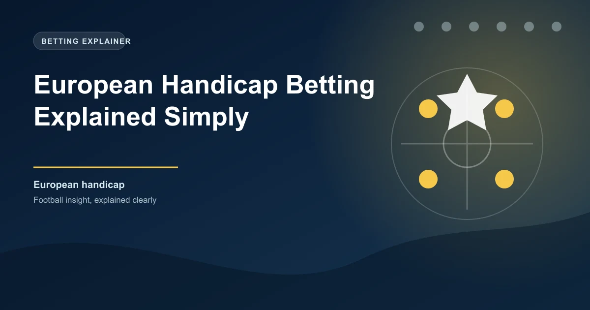

When one football team is heavily favoured to win a match, the standard 1X2 market often offers slim returns on the favourite. A Manchester City win over a struggling bottom-side might come in at 1.15 odds, which barely justifies the risk. European handicap betting solves this problem by applying a goal adjustment that levels the playing field and creates more competitive odds across all three outcomes.
If you have ever looked at a match and thought the odds on the strong team were too short to be worth backing, the European handicap is likely the market you need. This guide breaks down exactly how it works, how to read the numbers, and where the value tends to hide.
European handicap betting is a three-way market that adjusts the final score by adding or subtracting goals from one team before the outcome is determined. Unlike the Asian handicap, which can produce half-goal margins and refund outcomes, the European handicap uses whole numbers only and always produces a winner and a loser. There are no pushes or partial refunds.
You will sometimes see it called the "three-way handicap" or "standard handicap" at different bookmakers. The concept is the same regardless of the name. One team is given a goal advantage or disadvantage, and you bet on the result after that adjustment is applied.
Let us walk through a concrete example to make this clear.
Standard 1X2 Odds:
European Handicap (-2) Odds:
In this scenario, if you back Arsenal at -2, they need to win by three or more goals for your bet to succeed. If Arsenal win 3-0, the adjusted score becomes 1-0 in your favour. If they win 2-0, the adjusted score is 0-0, which means the "Draw" outcome wins at the handicap level. If they win 1-0, Sheffield United effectively wins the handicap at +2.
The beauty of this market is that it turns a one-sided contest into three genuinely competitive options. Instead of accepting 1.18 on Arsenal, you get 2.10 by asking them to win convincingly. That is a meaningful improvement in your potential return.
This is a question that comes up constantly, and the difference matters for your bankroll.
| Feature | European Handicap | Asian Handicap |
|---|---|---|
| Outcome options | Three (Win, Draw, Lose) | Two (Win, Lose) |
| Goal adjustments | Whole numbers only | Whole and half numbers |
| Refund possibility | No | Yes (with half-goal lines) |
| Draw at handicap level | Bettable outcome | Refunded |
| Typical odds range | Wider range across three picks | Lower margins, tighter odds |
The key distinction is that the European handicap lets you bet on the draw at the handicap level. This creates an extra selection, which means higher odds on all three outcomes compared to the two-way Asian equivalent. The trade-off is that bookmakers build slightly higher margins into European handicap markets because of the additional selection.
For bettors who want to back a strong favourite at a reasonable price, the European handicap often delivers better value than the Asian handicap when the favourite is expected to win by a large margin. The third outcome (the draw at handicap level) acts as a safety net that the Asian handicap simply does not offer.
The European handicap shines in specific situations. Understanding when to reach for it separates profitable bettors from those who just chase short odds.
When a top-six Premier League side hosts a newly promoted team, the straight win odds become almost useless for value seekers. The European handicap at -1 or -2 gives you a realistic way to back the dominant team at odds that actually justify the stake.
Early-round FA Cup or Copa del Rey ties often feature massive quality gaps. The European handicap lets you bet on the stronger side to win convincingly without accepting odds of 1.10 or lower.
Some teams are prolific at winning by multiple goals. Manchester City, Bayern Munich, and Real Madrid regularly win matches by two or three goals. If a team's average winning margin over the season is 2.3 goals, backing them at -2 in the European handicap can be a sharp play.
A team might win 70% of their matches but only win by two or more goals in 35% of them. Before backing a team at -2, look at their average goal difference in victories. A team that frequently wins 1-0 is a poor candidate for a -2 European handicap, even if they win almost every match.
Finding value in the European handicap requires a different approach than standard match betting. Here is a step-by-step process that works.
Bookmakers typically offer European handicap lines at -1, -2, and -3 for the favoured team. Here is what each requires.
The +1, +2, and +3 lines work in reverse for the underdog. Backing the underdog at +2 means they can lose by one goal and still win your bet. A 2-1 defeat becomes a draw at the handicap level, and a 1-1 draw becomes a win.
The draw at the handicap level is an appealing option because it looks like a middle ground, but it is often the least value pick. Bookmakers know that bettors gravitate toward the draw when they are unsure, so the margins on that selection tend to be higher. Always compare the implied probability of the draw to your own assessment before committing.
Let us work through a complete analysis of a European handicap bet.
Liverpool have won their last 8 home matches with an average winning margin of 2.4 goals. Nottingham Forest have conceded 2.1 goals per match away from home this season. Liverpool's Asian handicap line is set at -1.75 at odds of 1.88.
European Handicap -2 Odds: 2.05
Liverpool have won by 3 or more goals in 5 of their last 8 home matches. That is a 62.5% rate. The odds of 2.05 imply a probability of 48.8%. Your analysis suggests Liverpool have a 55% chance of meeting the -2 requirement.
Value calculation: 55% implied probability vs 48.8% bookmaker probability = 6.2% edge. This is a value bet.
This kind of analysis takes practice, but once you build the habit of comparing your assessed probability against the implied odds, the European handicap becomes one of the most useful markets in your toolkit.
Because European handicap odds are typically in the 1.80 to 3.50 range, they fit naturally into most staking plans. The key is to avoid over-staking on the shorter-priced handicap lines (like -1 at 1.65) where the edge is thin. Reserve your larger stakes for handicap lines where your analysis shows a clear gap between your probability estimate and the market's implied probability.
A disciplined approach is to treat European handicap bets the same as any other wager. Track your results separately from standard 1X2 bets so you can see whether this market is genuinely adding value to your overall portfolio.
Use our Ticket Builder to combine handicap picks with other markets for optimised accumulator tickets.
Yes. European handicap, three-way handicap, and standard handicap all refer to the same market. The name varies by bookmaker, but the mechanics are identical.
Yes, but only at the adjusted score level. If the final score after applying the handicap is level, the "Draw" selection wins. In the original match, there can still be a winner.
Neither is universally better. European handicap is better when you want to bet on the draw at the handicap level or when backing a heavy favourite at improved odds. Asian handicap is better when you want lower margins and the option to get refunded on tight handicap lines.
The -1 and +1 lines are the most frequently offered. These suit matches where the favourite is expected to win but the underdog has enough quality to keep it relatively close.
 Win
Win